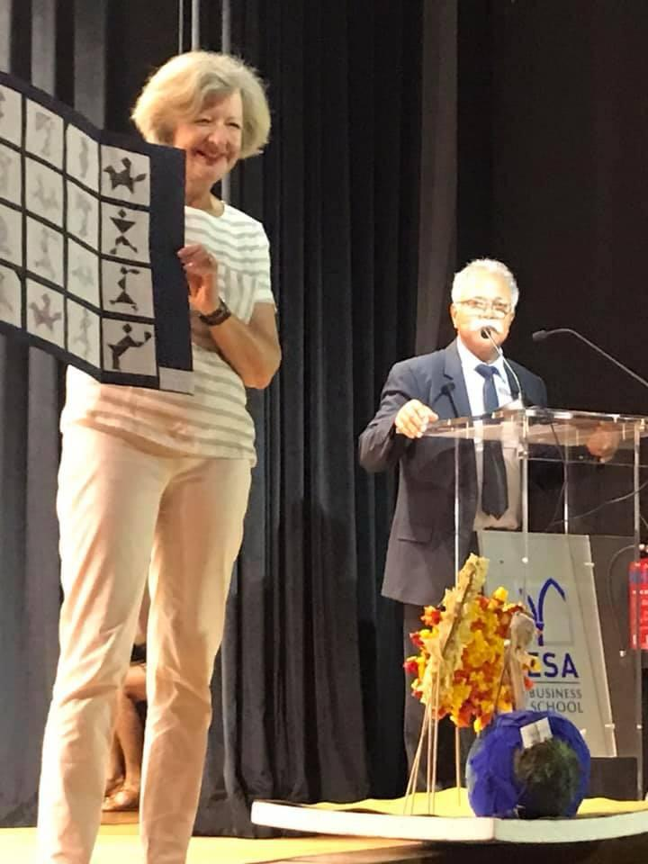
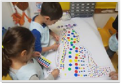
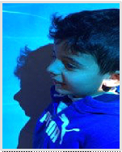
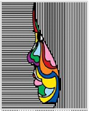
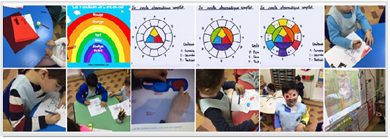
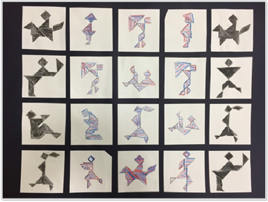

Dans le cadre du concours AFLEC 2019, les élèves de Grande Section du Lycée Français International Elite de Beyrouth ont exploré la notion de contraste à travers un parcours transdisciplinaire. Ce projet visait à structurer la perception visuelle et spatiale en mêlant création artistique et expérimentation scientifique.

I. Rythme et Identité Visuelle
Le parcours a débuté par l'étude du contraste des valeurs. À la manière de Yayoi Kusama, les élèves ont travaillé l'opposition du noir avec le blanc et du blanc avec le coloré sur des silhouettes les représentant dans diverses positions de yoga.

Cette réflexion s'est prolongée par l'étude du contraste entre structures géométriques et organiques. Les élèves ont capturé la ligne de séparation entre ombre et lumière en projetant leurs propres profils.

Le résultat final met en évidence le contraste entre la rigueur des lignes droites et la fluidité des courbes colorées du visage, créant un dialogue entre l'ordre graphique et l'identité personnelle.

II. Science de la Perception
L'approche pédagogique a également intégré une dimension scientifique. En abordant le cercle chromatique, les élèves ont appris à distinguer et opposer les couleurs chaudes et froides. Ils ont expérimenté les propriétés optiques de la lumière en utilisant des filtres rouges pour révéler des messages secrets.

III. Synthèse : Le Relief par le Tangram
L'aboutissement de ce projet est une œuvre collective composée de vingt tangrams. Huit d'entre eux jouent sur un contraste noir sur blanc radical, tandis que douze tangrams centraux utilisent des bicolores pour générer un contraste de relief.
À l'aide de lunettes 3D, le décalage visuel provoqué par les filtres colorés permet de percevoir la profondeur réelle de la composition, transformant le plan bidimensionnel en une expérience spatiale immersive.
